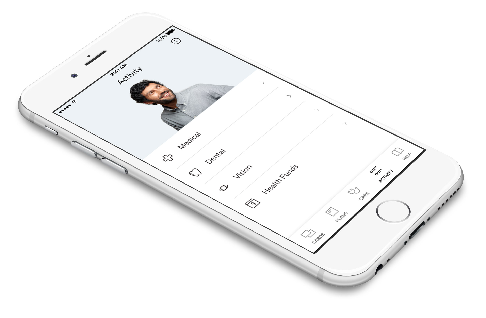

Collective Health is an SF startup improving the experience of employer-based healthcare.
ROLE
Product Design Intern
& Designer (Contract)
LENGTH
3 months
YEAR
2018-19
I learned a great deal about the level of detail that goes into a design system–especially one that is being built from the ground up. Here’s a few pieces of the system that I worked on, plus some extra goodies. Still adding content here.